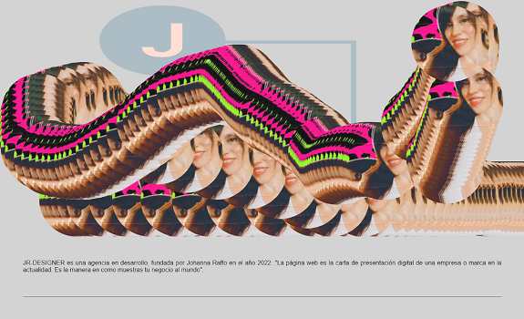
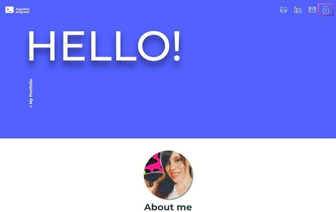

<section class="proyectos_section" id="proyectos">
  <div class="proyectos__container">
    <span><h2 class="section-title">Proyectos</h2></span>
    <br>
    <br>

    <ul class="cards text-center">

      <li class="cards_item">
        <div class="card">
          
          <div class="card_content">
            <h2 class="card_title">Web Page</h2>
            <p class="card_text">Página web utilizando HTML, CSS Y JS. Realizado como proyecto final del curso
              "Diseño web creativo" para Domestika.</p>
            <a href="https://jr-designer.netlify.app/" class="btn card_btn" role="button">More</a>
          </div>
        </div>
      </li>

      <li class="cards_item">
        <div class="card">
        
          <div class="card_content">
            <h2 class="card_title">Portfolio Web</h2>
            <p class="card_text">Aplicación web full stack, utilizando Angular y BD, realizado como proyecto final
              para "Argentina Programa".</p>
            <a href="https://portfolio-jr-1cf05.web.app/"class="btn card_btn" role="button">More</a>
          </div>
        </div>
      </li>

      </ul>

  </div>
</section>

